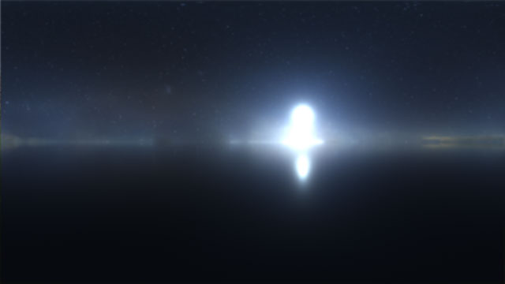
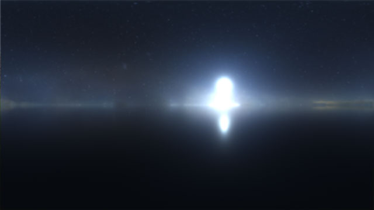

[LIMEN EXHIBITION SPEAKER DESCRIPTION]
• Click the dots on the ground to move forward and backwards. • Click, hold and drag to look around. • Alternatively, use WASD or ↑←↓→ keys to move around.
 
